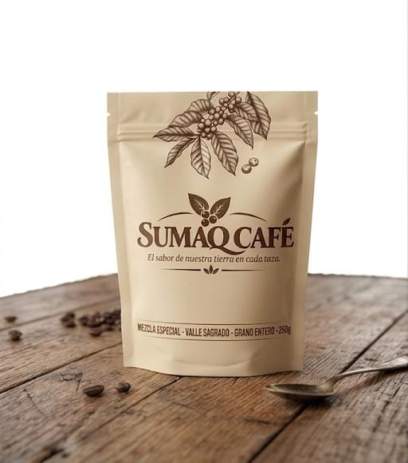

Cada saco que recibimos viene con nombre propio: la familia que lo cosechó, la altura del terreno y la fecha de recojo. Así cuidamos el café desde antes de que sea café.
Compramos cereza madura, seleccionada a mano, y pagamos un precio justo por encima del mercado a más de veinte familias de los valles del Vraem, Quillabamba y el Valle Sagrado. No trabajamos con intermediarios: visitamos las parcelas antes de cada cosecha, caminamos los cafetales con los productores y acordamos el precio antes de que el grano se recoja, no después.
Esto significa que cuando llega la temporada de cosecha, entre abril y julio según la zona, ya sabemos exactamente cuántos sacos vamos a recibir de cada familia y a qué precio, lo que les da la tranquilidad de planificar el año sin depender de intermediarios que bajan el precio en plena cosecha.
Además, compartimos con cada familia el resultado de la taza: les contamos qué notas de sabor encontramos, cómo lo tostamos y qué dijeron los clientes que lo probaron. Creemos que quien cultiva el café también debería poder disfrutarlo y entender en qué se convierte su trabajo.

Tres zonas con microclimas distintos, cada una con un carácter propio en taza.
Valle Sagrado, Cusco. Entre 1,700 y 1,900 msnm, con suelos volcánicos y noches frías que retrasan la maduración de la cereza. El resultado son tazas con notas a panela, frutos secos y un cuerpo medio muy equilibrado, ideal para quienes recién empiezan a explorar cafés de especialidad.
Quillabamba, La Convención. Entre 1,600 y 1,850 msnm, en la ceja de selva cusqueña. Aquí la humedad y la sombra de árboles nativos le dan al café un perfil cítrico y floral, con acidez brillante que se disfruta especialmente en métodos filtrados como V60 o Chemex.
Vraem, entre Ayacucho y Junín. Entre 1,400 y 1,650 msnm, una zona que en los últimos años ha apostado fuerte por el café como alternativa sostenible. Los suelos más bajos y cálidos producen un café de cuerpo denso y dulzor a chocolate oscuro, perfecto para espresso.
El precio justo es solo el punto de partida. Esto es lo que hacemos durante todo el año.
Visitas antes de cosecha. Cada año, entre enero y marzo, recorremos las parcelas junto a un agrónomo para revisar el estado de las plantas, detectar plagas a tiempo y planificar el volumen esperado.
Precio acordado por adelantado. Fijamos el precio antes de la cosecha, sin esperar a ver cómo se mueve el mercado internacional, y siempre por encima del precio de referencia de la zona.
Retroalimentación de taza. Después de tostar cada lote, catamos el café y enviamos una ficha a la familia con las notas de sabor encontradas, para que sepan qué tan bien se paga su cuidado en el campo.
Reinversión en la parcela. Parte de nuestra utilidad se destina a un fondo compartido para renovar plantas viejas y mejorar los sistemas de secado de las familias más pequeñas.